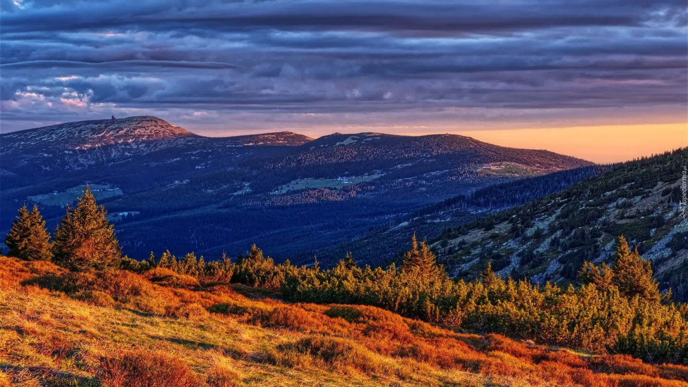
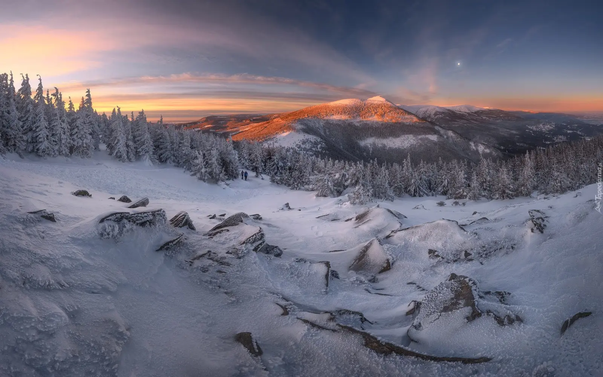

Expansive alpine vistas, crisp high-altitude wind, and dramatic mountain weather in any season. Slow travel to Śnieżka.
Why Śnieżka, differently
Śnieżka (1,603 m) is the highest peak of the Karkonosze and the entire Sudetes — and one of the windiest places in Europe. It is a summit that does not forgive mistakes but in return offers views that take your breath away. It lies on the Polish-Czech border, and at its summit is the 17th-century Chapel of St. Lawrence and a meteorological observatory from 1900 — one of the oldest in Europe.
Slow travel to Śnieżka means giving up haste. Instead of running up to the summit and back down, plan the day so that you stop on the ridge, listen to the wind, eat a sandwich with a view of the Czech side. This is a mountain that rewards the patient — for the effort of the ascent it gives one of the most beautiful views in Poland. Śnieżka teaches humility — and that is its greatest value.
What to see
Śnieżka is not just the summit itself — it is a whole complex of attractions around it: shelters, trails, observatory, chapel. One day is enough to see it, but it is worth devoting a full day.
Summit and chapel
- Śnieżka summit (1,603 m) — the highest point of the Karkonosze, with a panorama over the whole Sudetes, the Jelenia Góra Valley and — in good weather — the Tatras. Worth it for the most recognisable views in the region.
- Chapel of St. Lawrence — a Baroque chapel from the 17th century, one of the symbols of Śnieżka. Modest interior but historic. Worth seeing.
- Meteorological observatory — one of the oldest in Europe (since 1900). Worth seeing from the outside — a distinctive building in the shape of three discs.
- Shelter on Śnieżka — a shelter on the summit, with a buffet and accommodation. Worth it for a break and rest.
- Views from the platform — from the viewing platform a 360-degree panorama opens up. Worth it in good weather.
Trails to Śnieżka
- Trail from Karpacz via Samotnia — the most popular approach (~4 hours). Leads via Samotnia, the Mały Staw Cirque, Dom Śląski. Moderately difficult, requires fitness.
- Trail from Karpacz via Kopa — alternative approach (~3 hours), with a chairlift ride to Kopa (1,377 m). Shorter but the final section on foot.
- Trail from Pec pod Sněžkou (Czech Republic) — a gentler approach from the Czech side (~2.5 hours). Worth it for lesser-known views.
- Trail from Karpacz via Sowa — a less-frequented approach (~3.5 hours). Worth it for lesser-known views.
- Trail via the Snowy Cirques — a route through glacial cirques (~5 hours). Worth it for ambitious hikers.
Surroundings
- Samotnia — a shelter over Mały Staw, one of the most beautifully situated in Poland. Worth seeing on the way to Śnieżka.
- Dom Śląski — a shelter on the Polish side, at 1,400 m. Good base for Śnieżka.
- Snowy Cirques — two glacial cirques on the slopes of Śnieżka, on the Czech side. Worth it for ambitious hikers.
- Karpacz — a town at the foot of Śnieżka, with accommodation base and the Wang Temple. Worth it for the atmosphere.
When to go
- May and June — the best time for Śnieżka. Fewer crowds than July and August, long days, stable weather. Note: snow may still lie in higher parts.
- September and October — second best. Autumn colours, clear air, fewer people. First snow usually in the second half of October.
- July and August — peak season. Śnieżka crowded, ticket queues long, car parks full. If you must — pick a weekday and start at 6:00 AM.
- Winter — Śnieżka in winter is very dangerous (strong wind, blizzards, ice). Requires experience and proper equipment (crampons, ice axe, winter jacket). For experienced hikers.
Getting there
- By car: ~1.5 hours from Wrocław (A4 and DK3), ~2 hours from Prague, ~4 hours from Berlin, ~5 hours from Warsaw. Car parks in Karpacz (paid, in season full from 7 a.m.).
- By train: station in Jelenia Góra (~15 km from Karpacz), with connections from Wrocław (~2.5 hours), Berlin (~5 hours), Prague (~4 hours). Then bus to Karpacz.
- By bus: PKS and private operators from Jelenia Góra to Karpacz.
- By chairlift to Kopa — from Karpacz to Kopa (1,377 m), from where the final section to Śnieżka is on foot (~1.5 hours).
Within Karpacz you can walk or use local minibuses. Parking in Karpacz is paid and difficult — better to leave the car at the hotel.
How much time you need
A full day (6–8 hours) is the minimum for a leisurely ascent to Śnieżka and return.
A weekend (2 days) lets you add Samotnia or the Snowy Cirques.
A week lets you explore the whole Karkonosze — Śnieżka, Samotnia, Snowy Cirques, Szrenica, waterfalls.
What to eat and where to sleep
- Kwaśnica — cabbage soup with meat, a regional classic. Available at the shelter on Śnieżka.
- Silesian dumplings — round potato dumplings with a hole, served with sauce and meat.
- Duck with apples — a Lower Silesian classic, available in restaurants in Karpacz.
- Grilled oscypek — smoked sheep cheese with cranberry, available at shepherd huts on the meadows.
- Coffee and cake — the shelter on Śnieżka and Karpacz have several good cafés.
- Beer from local breweries — several craft breweries in the Sudetes (Browar Wielka Sowa, Browar Złoty Pies).
Accommodation: Karpacz (largest choice, but expensive), Szklarska Poręba (close to waterfalls), Jelenia Góra (cheaper, but further), PTTK shelters on Śnieżka, Samotnia, Dom Śląski (cheap but book ahead).
Practical tips
- Bookings — book accommodation at the shelters on Śnieżka, Samotnia and Dom Śląski in advance, especially in season.
- Weather — Śnieżka is one of the windiest places in Europe. Wind can exceed 200 km/h. Check the forecast before setting out.
- Shoes — sturdy trekking boots are essential on the Śnieżka trail. In higher parts it can be slippery (stones, roots, snow).
- Water and food — you can eat at the shelters, but prices are high. Bring your own food and water.
- In winter — the Śnieżka trail in winter requires crampons, ice axe and experience. Do not go alone.
- KPN tickets — required on trails in Karkonosze National Park. Buy online (kpnmab.pl) or at entry kiosks.
- Mobile signal — poor in the Karkonosze, non-existent in some valleys. Download offline maps.